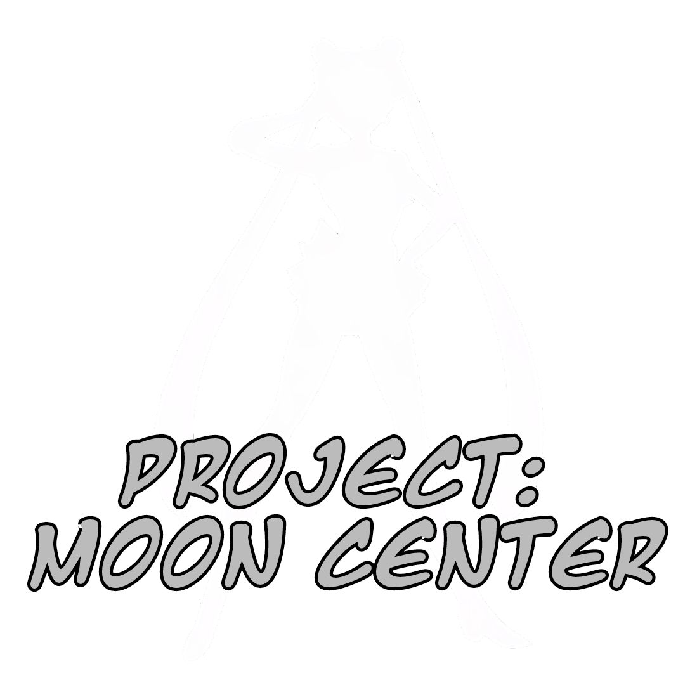

Project: Moon Center es una plataforma diseñada para ofrecer información confiable, actualizada y bien organizada sobre el fascinante mundo del Anime, Manga y Videojuegos.
Nuestro objetivo es conectar a los fans con datos relevantes, curiosidades y noticias de sus franquicias favoritas, todo en un entorno visualmente atractivo y fácil de navegar.
Creada con dedicación y pasión por Walter Lemes, también conocido como Walterex, Moon Center busca convertirse en un punto de referencia para quienes desean explorar y aprender más sobre este universo creativo.
Ya seas un amante de los clásicos o un explorador de nuevas obras, aquí encontrarás un espacio para disfrutar y descubrir.
En Moon Center, valoramos la precisión y el detalle. Por ello, cada artículo, ficha y reseña ha sido cuidadosamente preparado para brindarte la mejor experiencia posible.
Estamos comprometidos con el crecimiento de la página y siempre abiertos a sugerencias y colaboraciones que nos permitan seguir mejorando.
Nuestra Misión
Ser una fuente confiable y accesible para los fans, fomentando el amor por el Anime, Manga o Videojuegos, y creando una comunidad vibrante donde todos puedan compartir sus intereses.
¡Gracias por ser parte de este proyecto!
Volver al inicio